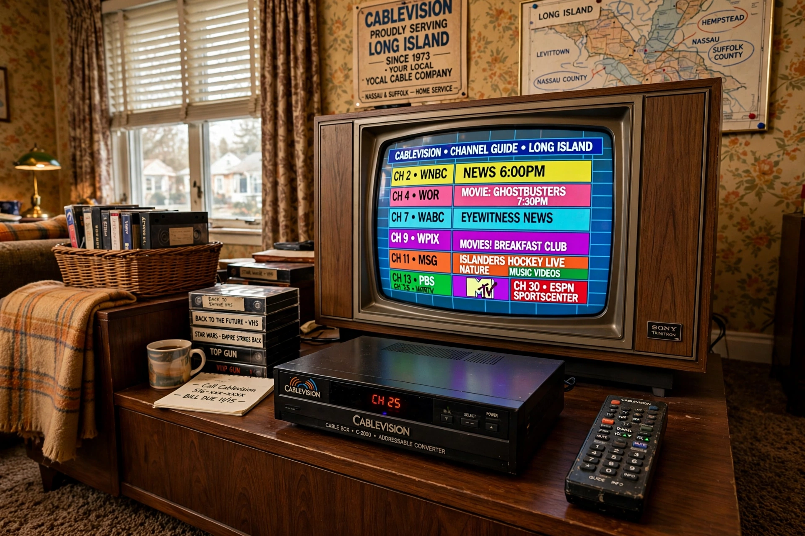

Cablevision Systems Corporation was an American cable television company serving the New York metropolitan area, founded in 1973 by Charles Dolan. It provided cable TV, broadband internet (Optimum) and telephone service to millions of customers in New York, New Jersey, Connecticut and Long Island.

Dolan, who had earlier founded HBO and sold it to Time Inc., built Cablevision from Long Island systems into the fifth-largest US cable operator. The Dolan family also controlled Madison Square Garden companies and the AMC Networks businesses, which were spun off. Cablevision owned the Newsday newspaper and the regional News 12 channels.
In 2016 Altice, the European telecom group of Patrick Drahi, acquired Cablevision for about $17.7 billion including debt, rebranding services under Optimum and forming Altice USA. See Altice USA and Optimum.